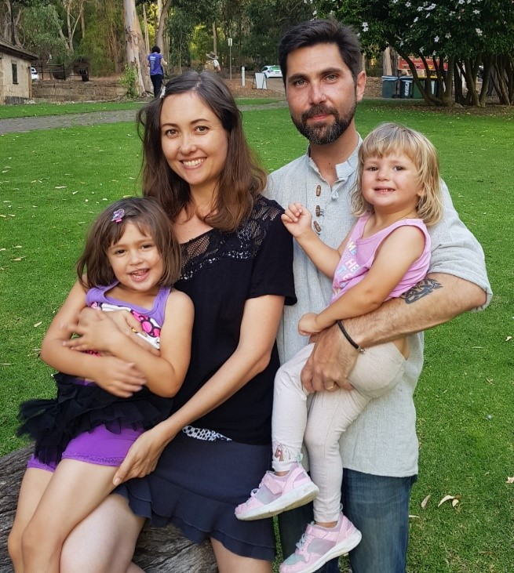

Ms H. Griffiths
Student number: s3866986
Email: s3866986@student.rmit.edu.au
I was born in Canberra, A.C.T in 1979. Prior to starting a degree in IT, I was a second year Bachelor of Medical Science student. I changed to an online IT degree as childcare costs for me to attend university were costing our family $350 a week; akin to having a second mortgage! An interesting fact about me is that I try to acquire all our household possessions (including clothes and shoes) from second-hand sources such as thrift stores or gumtree online marketplace. I like the fact that this behaviour contributes to keeping items out of landfill. Of course, I always buy new undies and socks!
I'm drawn to Information Technology for a variety of reasons. IT is an ever-changing landscape which keeps it fresh and interesting. I enjoy studying so I think I'll be in a good position to keep up with its moving trends. I find the fact that tech projects can be created on a device at home yet, produce something that can operate in the broader world to be an inspiring aspect of IT. For example, Julian Assange had quite a simple but powerful idea for a website called Wikileaks, a website which resulted in real-world implications for journalism and International relations the world over. Finally, I appreciate the fact that IT knowledge is a skill set which is ubiquitous in its demand and application in the job market. This means that a career in IT has the capacity to offer both security and versatility, which is important to me as a mother who also wants career mobility.
I chose to study at RMIT for two reasons; it offers a four-semester study year as opposed to the traditional two semesters a year, and it offers a tech degree entirely online. This format allows me, as a mother of many children, to pursue a tech degree at a part-time pace of two units per semester, yet still complete the degree in a three-year span as if studying full-time. With the coursework all online, it also allows me to fit in study around caring for children and managing a household. Prior to taking up RMIT's online IT degree, I was studying a Medical Science degree through a traditional on-campus curriculum. This required considerable childcare costs, travel to and from campus and other practical considerations which were burdensome.
My IT experience prior to starting this course was nothing more than what the average lay-person knows. For this reason, I expect a steep learning curve when undertaking this course. When trying to coax my toddlers into trying an unfamiliar food, I encourage them to be "food adventurers". Likewise, by pushing myself into unfamiliar tech-education territory, I'm encouraging myself to be a "learning adventurer". During my studies, I hope to learn the IT skills currently in demand in the workforce as well as future skill trends. I would like to be exposed to a broad range of skill sets as well as the capacity to learn some in greater detail.
My ideal job is that of a Digital Forensic Analyst, a job which lies within the cybersecurity domain. This role involves applying scientific investigatory techniques to digital crimes in order to unearth evidence and information be used to stop and/or prosecute illegal activity. Digital crimes have a broad scope, including cyber-attacks, child pornography, and the online activities of organised crime syndicates or hostile foreign governments. Because of the diversity and growth of nefarious cyber activity, the role of a digital forensic analyst is applicable in both the private and public sectors.
The job advertisement I have included as an example of my ideal job is that of a Digital Forensic Analyst working for the N.S.W Police Force (NSWPF) [1]. The role is a position within the NSWPF Digital Forensics Unit team. I would describe the position as a role that involves the application of scientifically validated investigatory techniques coupled with IT technical know-how, to identify, preserve and analyse digital evidence of crimes, which can then be presented in a court of law.
This position is appealing to me for a variety of reasons. First, the position may allow me to access a role fighting child sexual exploitation - work which I would find meaningful. Second, this position would likely require much problem solving and a diversity of projects, making for interesting work. Finally, I'm a detail-orientated, technical-minded and thorough individual and I believe that these personality traits would be well-suited to a forensics role.
The advertised position asks for various skills, qualifications and experience. It lists essential requirements to include a security clearance, driver's license with no traffic offenses in last 6 months, psychometric and psychological testing, a tertiary qualification in Computer Science or a related technical field and finally, well-developed analytical, research and problem-solving skills. The skills that I currently hold that would match the job description are rather modest - I have a driver's license with no traffic offences, and I hold no encumbrances preventing a security clearance. I have completed a first year of a Bachelor of Medical Science with high grades which provides some evidence of well-developed analytical, research and problem-solving skills.
In order to position myself for securing a job such as a Digital Forensic Analyst, further skills, qualifications and experience will need to be attained. I would like to complete a Bachelor of Information Technology through RMIT at a minimum, but ideally go on to do further study. The University of New South Wales (Canberra) offers a Master of Cyber Security in Digital Forensics, a one-year course where 6 of the 8 units can be undertaken in 'Distance Mode' [2]. Completion of these qualifications would allow me to meet the NSWPF job position criteria of a tertiary qualification in Computer Science or related technical field, as well as supply evidence of a capacity to research and problem-solve, skills central to successfully completing university coursework. Upon graduation, my lack of job experience could make me an undesirable hiring prospect, I would therefore be initially interested in offering my skills to interested parties in the capacity of volunteer or pro-bono project work. This would enable me to build-up a track record of work and references, potentially making me a more desirable candidate to hiring employers such as the NSWPF.
I undertook the Myers-Briggs Type Indicator (MBTI) test through the website, www.truity.com [3]. Of the 16 distinct personality types, my top three personality type matches came back as 1. ENFJ - The Teacher, 2. INFJ - The Counsellor, and 3. ENTJ - The Commander. The letters refer to E = Extraversion or I = Introversion, S = Sensing or N = Intuition, T = Thinking or F = Feeling and J = Judging or P = Perceiving. The allocation of types is based on preferences identified through the testing. These four meta-categories refer to the four dichotomies described in C. G Jung's Theory which informed the development of the Myers-Briggs Type Indicator Test [4]. My energy style was characterised as 'Blended' with a slight preference for Extraversion; 52% Extraversion and 48 % Introversion. My dominant cognitive style was deemed 'Intuitive', sitting at 71% compared to 28% Sensing. My value style was determined to be 'Blended' with a slight preference for Feeling over Thinking (56% vs 44%). My dominant life management style was described as 'Judging', returning results of 64% compared to 36% for Perceiving.
I completed an online learning styles test at educationplanner.org [5]. My results consisted of 25% Auditory, 40% Visual and 35% Tactile. I also undertook a Big Five Personality Test at truity.com [6]. The Big Five Personality Test measures scores on five major dimensions of personality - Openness, Conscientiousness, Extraversion, Agreeableness and Neuroticism. I returned scores in each category as listed in the graph below.
My perception of these tests is that they operate in broad brushstrokes and are novel tools for self-reflection. I would not put a great deal of value on their scientific or predictive validity. I think human-behaviour is highly versatile and adaptive. Evidence of this exists in the extraordinary range of diverse cultural practices found through-out the world and through-out human history. In my experience, people exhibit different sides of themselves in different circumstances, with many personality traits operating within a highly flexible range rather than as static traits. Culture also plays an important role in shaping which human behaviours or personality expressions are considered desirable or even permitted, and culture sits outside of an individual’s innate psychological profile. With this understanding, it could be difficult to discern whether such tests are scoring an individual’s traits, internalised cultural values or a blend of both.
In considering these results and their implications for teamwork, I prefer to use them as springboards for self-reflection rather than as solid facts. Drawing on the MBTI test results, I thought it was interesting that I returned ‘blended’ results for Extraversion vs Introversion and Thinking vs Feeling. This could indicate that I would make a good ‘Even-Steven’ kind of personality to have in a group mix, forming a bridge between Extraverts and Introverts, those ruled by their heads and those ruled by their emotions. Perhaps I could operate as a personality compass for the middle road. My test results for learning styles revealed my strongest orientation lay with visual learning, so I may be more engaged with group work if it involves visual stimuli such as video conferencing or exchanging information through visual means. My highest score in the Big Five Personality test, lay in the domain of openness, and I think this bodes well for my capacity to function in a team. According to the report generated on the test website, “High scorers tend to be creative, adventurous and intellectual. They enjoy playing with ideas and discovering novel experiences” [6]. Groupwork is often a fluid environment, sometimes involving unpredictable dynamics between individuals and in group outcomes and direction. I think my high score in openness could make me an adaptable and nimble group-player that doesn’t necessarily come to the table with fixed ideas.
Ideally, when looking to form a team, I would seek out people who score higher in the areas where I score lower and vice versa. This would allow for a well-rounded team with personality and skill traits covering a broad scope. Understanding other team-members test results could also help inform me as to how they operate in the world which could assist in building trust and rapport within the group. For example, if I knew someone was an introvert, I would have an understanding that their communication style might be displayed in a low-key manner and this should not be construed with disinterest. In understanding my own test-results I can also reflect on what roles in the team I may be best suited for. For example, my MBTI test result of ‘teacher’ might make me suitable for being heavily involved in constructing the presentation for Assessment Task 5, as this is about communicating the ideas and information that encompass our project to an audience.
My project idea is the construction and presentation of an Animation Micro-film Festival where the micro-films have been created utilising do-it-yourself (DIY) microcomputers called Rasberry Pis. The Animated Micro-film Festival would be a class-based project that is suitable for a high-school or tertiary Introductory IT class, with its core goal being to increase IT skills through a fun and creative endeavour. The festival would be modelled on Tropfest, an Australian short-film festival of world renown. Unlike Tropfest, this micro-film festival would not be an International event but rather an in-class event with the microfilms compiled and ‘screened’ via a website for the class to enjoy.
Research shows that computer literacy is a desirable and rapidly growing skill requirement in the modern workplace [7], yet many people (disproportionately female) do not pursue any education in IT. One reason for this may be the perception that IT is dull. While there is no escaping the fact that IT education involves learning procedural and technical information, this should not preclude even those with basic IT skills from pursuing creative outlets for their early skill set. Creating short animated films using Rasberry Pis can offer novice IT students a tactile and creative project that brings technology to life and busts the stereotype of IT students sitting at screens in every class.
The Animated Micro-film Festival is a class-based project that is suitable for a high-school or tertiary introductory IT class. It involves individuals or groups of individuals, utilising do-it-yourself microcomputers called Rasberry Pis, along with a Camera Module and the Python programming language to create short animations (micro-films). The individual animations can then be collated into a simple website to provide a ‘film-festival’ screening event, where the website goes live and the class can enjoy watching one another’s animations.
The Animated Micro-film Festival draws inspiration from Australia’s iconic short-film festival, Tropfest. Tropfest is the world's largest short-film festival, attracting an average of 150,000 people for its main event, which features a series of short films of less than 7 minutes duration shown back-to-back [8]. In the class-based animation festival, the animations are also compiled and ‘screened’ back-to-back (but in this case via a website). Another link to Tropfest will be established by the featuring of a Signature Item in the microfilms.
Each year Tropfest announces a Tropfest Signature item; an item which must feature in or inspire the films made for that year’s festival. For example, the Tropfest Signature Item for 2014 was “MIRROR” [K]. The micro-film festival Signature Item could be chosen by the course instructor and would be something readily available, such as “FOOD” or could even be an abstract idea such as “DISSOLVE”. The Signature Item acts as a spring-board for story ideas and also a unifying principle which ties the individual films into a more cohesive viewing experiencing when they are seen back-to-back.
The use of Rasberry Pis to create the animations is purposeful. Most people’s experience of computers is that of a slick consumer product with its components hidden away. By utilising Rasberry Pis, novice IT students are experiencing a ‘naked’ computer where students need to do some work to get it up and running and connected to peripherals. This is not a daunting experience due to the large volume of support materials provided by the Rasberry Pi website and community of enthusiasts; therefore, the student is learning some basic computer building skills in a supported manner.
The Rasberry Pis are also highly mobile due to their miniature size, making them perfect for creative applications such as making an animation. Due to their portability, the film can be created anywhere; outdoors, a room in a house or even a public venue. This aspect augments the creative experience. By utilising push button stop motion, students can create animations from everyday objects or try their hand at plasticine models/puppets, once again opening-up endless creative possibilities.
By connecting a Rasberry Pi Camera Module, students will learn how to take pictures with the computer via Python and then render them into an animation/video. This exposes the beginner to basic programming skills and once again, is not an intimidating experience as the process is outlined in detail via the Rasberry Pi website. At the end of the project, students have experienced the application of technology to make a product which exists in the real-world (an animated microfilm) - a great addition for portfolios. The films also serve to establish the creative potential of tech beyond a ‘dull’ reputation and thereby fuel further motivation and curiosity to study IT amongst students.
Some examples of a micro-animations created using Rasberry Pi, the Camera Module and some basic Java programming:
Micro-animation 1 Micro-animation 2 Micro-animation 3Total: $247.48 (includes optional components)
All prices are in Australian Dollars and quoted from:
www.core-electronics.com.auThis project is at a beginner skill level. Detailed step-by-step guides applicable to this project can be found at the Rasberry Pi website (www.raspberrypi.org):
Getting started with Rasberry Pi [9] Getting started with the Camera Module [10] Push Button Stop Motion for Creating an Animation [11] Using your Rasberry Pi [12]These tutorials assist a beginner, whether child or adult, by providing step-by step instructions for setting up the Rasberry Pi and connecting peripherals such as the camera, as well as instructions on how to use Python and the camera module to take pictures and compile them into an animation.
If this project is completed successfully, the following outcomes will be achieved:
These outcomes help solve the original problem whereby some people do not pursue IT education because of a perception of IT as procedural and dull with limited creative potential.
[1]SEEK, 2020. [Online]. Available: https://www.seek.com.au/job/50055170?type=standout#searchRequestToken=828e8d76-5fad-49d0-bfa2-5bd2d2441d49. [Accessed: 09- Jun- 2020].
[2]"Master of Cyber Security (Digital Forensics) (8628) | UNSW Canberra", Unsw.adfa.edu.au, 2020. [Online]. Available: https://www.unsw.adfa.edu.au/degree/postgraduate-coursework/master-cyber-security-digital-forensics-8628. [Accessed: 09- Jun- 2020].
[3]"The TypeFinder® Personality Test", Truity, 2020. [Online]. Available: https://www.truity.com/personality-test/17335/test-results/21425851. [Accessed: 09- Jun- 2020].
[4]"The Myers & Briggs Foundation - MBTI® Basics", Myersbriggs.org, 2020. [Online]. Available: https://www.myersbriggs.org/my-mbti-personality-type/mbti-basics/. [Accessed: 09- Jun- 2020].
[5]"What's Your Learning Style? 20 Questions", Educationplanner.org, 2020. [Online]. Available: http://www.educationplanner.org/students/self-assessments/learning-styles-quiz.shtml?event=results&A=5&V=8&T=7. [Accessed: 10- Jun- 2020].
[6]"The Big Five Personality Test", Truity, 2020. [Online]. Available: https://www.truity.com/personality-test/17315/test-results/21431519. [Accessed: 10- Jun- 2020].
[7]The Future of Jobs 2018. Cologny/Geneva: World Economic Forum, 2018, p. 24.
[8]"Tropfest", Mra.wa.gov.au, 2020. [Online]. Available: https://www.mra.wa.gov.au/see-and-do/perth-cultural-centre/events/tropfest. [Accessed: 15- Jun- 2020].
[9]Projects.raspberrypi.org, 2020. [Online]. Available: https://projects.raspberrypi.org/en/projects/raspberry-pi-getting-started. [Accessed: 10- Jun- 2020].
[10]Projects.raspberrypi.org, 2020. [Online]. Available: https://projects.raspberrypi.org/en/projects/getting-started-with-picamera. [Accessed: 10- Jun- 2020].
[11]Projects.raspberrypi.org, 2020. [Online]. Available: https://projects.raspberrypi.org/en/projects/push-button-stop-motion. [Accessed: 10- Jun- 2020].
[12]Projects.raspberrypi.org, 2020. [Online]. Available: https://projects.raspberrypi.org/en/projects/raspberry-pi-using. [Accessed: 10- Jun- 2020].